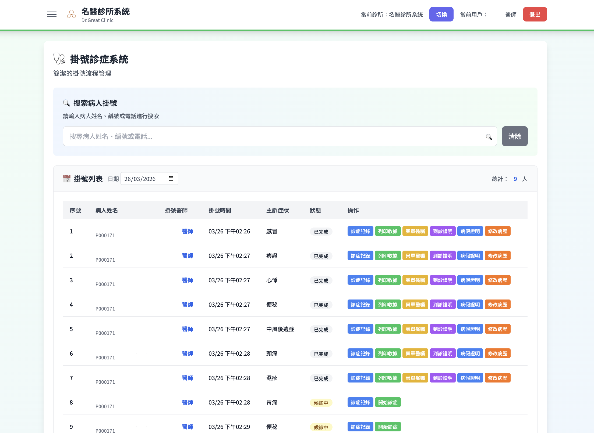
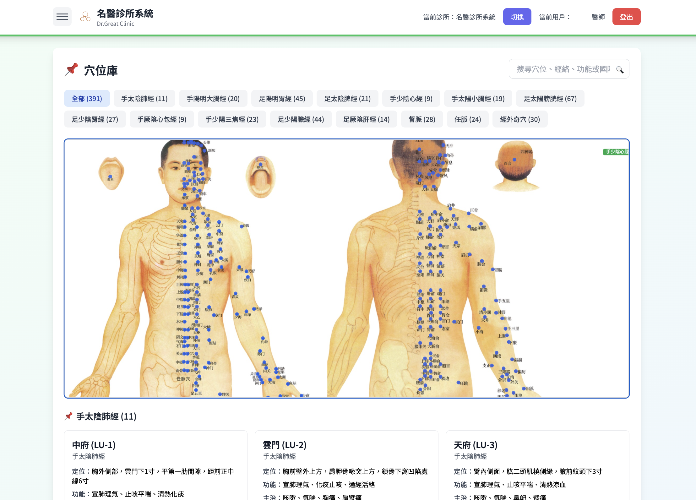
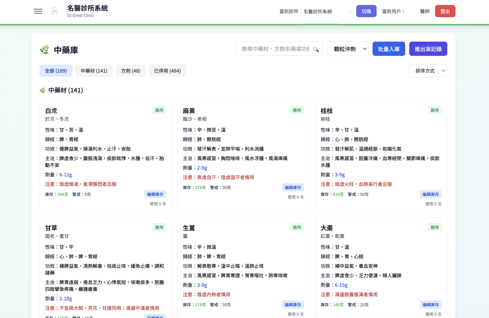
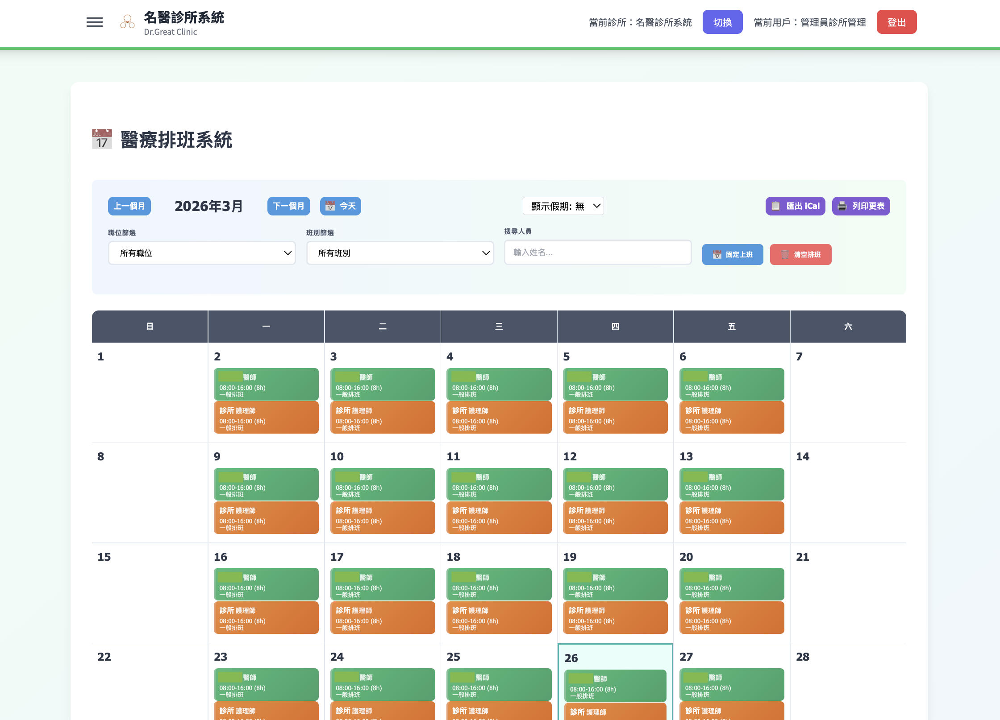

簡便 · 易用 · 高效
將千年中醫智慧與現代科技完美結合，從「望聞問切」到「辯證論治」全面數位化
讓您的診所管理效率提升 300%
由中醫師設計的中醫診所系統，更符合中醫需要
從前台掛號到後台管理，一站式解決所有需求
可透過手機或電腦24小時線上預約，自由選擇醫師與看診時段，系統自動同步更新診所排程。
數位化「十問歌」，12步驟引導式問卷涵蓋寒熱、汗出、二便、睡眠等，候診時間即完成體質初評。
完整的病患資料庫，支援病歷搜尋、歷史記錄追蹤、診斷範本快速輸入，讓醫師專注於診療本身。
視覺化醫師排班管理、營收統計分析、病患來源追蹤，數據驅動的經營決策從此更加精準。
中藥材進銷存追蹤、低庫存自動提醒、開方自動扣庫，讓藥房管理井井有條。
可自由設置醫師慣用的中藥方劑組合及常用穴位配搭，看診開方速度提升50%以上。
靈活設定療程套票（如針灸10次券、推拿月卡），自動扣次與效期管理，提升病患回診率。
支援連鎖診所架構，一鍵切換不同院區，集中管理所有分院的病歷與營收數據。
自動生成每日/月/季財務報表，詳細記錄掛號費、藥費、診療費，營收狀況一目了然。
支援匯入舊診所系統的 JSON/CSV，先解析預覽再執行轉移；病人資料自動比對去重，病歷可依病人資訊自動關聯。
每日自動雲端備份，備份檔經壓縮加密後安全存放；管理員亦可隨時手動同步，並提供一鍵還原功能，確保珍貴的醫療數據永遠安全無虞。
精細的權限控管系統，可針對醫師、護理師、櫃檯人員設定不同操作權限，保障資料安全。
所有診所資料都是自己保管，安全保密。
未來系統會持續更新及新增功能，完善使用體驗。
精心設計的用戶界面，讓診所同仁無需繁雜學習即可快速上手

一目了然的候診列表與即時狀態管理

視覺化經絡定位，輔助醫師精準診療

詳盡的藥材屬性與庫存自動預警系統

清晰的醫護排班日曆，支援多診所同步
打開瀏覽器即可「加到主畫面」，安裝後全螢幕啟動、沒有網址列，配合即時推播與離線快取，使用體驗與原生 App 無異，卻無 App Store 的繁複手續。
iPhone、Android、Mac 皆可安裝，啟動後全螢幕顯示、沒有瀏覽器網址列，桌面還會出現專屬圖示，就像為診所訂製的 App。
使用系統期間，病人候診、診症完成、公開頻道及私人聊天訊息即時推送至手機與電腦；登出或關閉系統後自動停止，下班不打擾。
網絡不穩或完全離線時仍可開啟系統與已快取內容，恢復連線後自動同步最新資料，診所運作不受網絡中斷影響。
Service Worker 預先快取介面與資源，第二次起動幾乎即時完成，不用等待載入，舊手機同樣流暢。
系統更新在背景自動完成，不必到手機應用商店手動升級，每次打開即是最新功能，同仁使用零落差。
安裝僅佔極小空間，不需開放大量權限，沒有應用商店審查束縛，更不會有第三方推送廣告。
深度整合中醫專業知識的診所系統
完整中藥材資料庫
針灸治療強力輔助
標準化診療流程
「問診」數位化
全球實時通訊節點網絡（SD-RTN™），自動選擇最優線路，即使病人身處海外或跨境，亦能流暢高清應診
專為香港中醫診症而設的視像診症功能。醫師在診症系統內一按即可開啟專屬診間，與電子病歷、開方記錄無縫連貫；病人不論身在香港、內地還是海外，只要打開收到的診間連結，就能與醫師面對面應診。
遍佈全球的實時通訊節點，按病人所在地自動選擇最優線路，就近接入、跨境低延遲。
病人毋須下載程式，透過 收到診間連結，瀏覽器打開即可應診，省卻安裝與登入。
進入診間前須先細閱並簽署電子同意書，同意時間與版本自動存檔；視像全程加密，不可擅自錄影。
因應網速自動調整畫質，4G／5G／Wi‑Fi 都穩定；網絡切換或短暫斷線會自動恢復，無需重新掛號。
舌象圖片與醫學報告（體檢報告、各類檢查圖片）即拍即傳，自動歸入當次病歷，歷來記錄一目了然
看診時拍下的舌照、病人提交的體檢報告及各類圖片，均可即時上傳並自動連結至當次病歷；圖片以縮圖展示、點擊即可查閱原圖，並標示上傳時間。醫師亦可隨時重溫病人歷次舌象，跟進療效變化更直觀。
每次診症的舌照分門別類，縮圖快速瀏覽、點擊查看原圖，比對舌質舌苔變化、追蹤療程一目了然。
電腦螢幕顯示限時 QR Code，手機掃碼即開啟拍照頁，毋須登入系統，拍攝後自動傳回當前病歷。
視像診症時直接擷取病人畫面，預覽確認後即時作為舌象圖片存入本次病歷，異地應診同樣無障礙。
雲端物件儲存配備限時簽章連結，圖片不經伺服器轉發、全程加密；縮圖自動產生，調閱快捷不佔頻寬。
系統將資料自動同步至雲端儲存：平日增量同步，每 7 日自動完整比對；備份檔安全存放並保留兩個月，管理員可隨時手動同步、下載及還原。
距上次完整基線滿 7 日即自動全量重讀，自然排除已被刪除的文件，確保雲端備份與現有資料完全一致，不會殘留過時記錄。
各集合的最新完整快照集中存放於雲端，每次同步後自動組裝成與舊版格式相容的完整備份檔，病人、病歷、收費、套票等資料一應俱全。
備份 JSON 以 gzip 壓縮，醫療資料一般縮小 5–10 倍，既節省 R2 儲存空間，下載備份亦更快捷，手機網絡也能輕鬆取得。
需要時匯入備份檔即可還原診所資料；管理員亦可隨時手動同步，或一按執行完整比對，立即校正異動與刪除。
由排程自動執行，管理員於手機或電腦亦可隨時手動觸發同步。
新資料合併至雲端內的完整快照，各集合最新狀態整齊保存。
gzip 備份檔安全寫入 R2 並自動更新同步狀態，舊檔到期自動清理。
採用業界最高標準的安全架構，保護您的診所與病患資料
WAF 網站應用防火牆，阻擋惡意攻擊
TLS/SSL 傳輸加密 + 靜態資料加密
多重驗證、憑證安全儲存
每間診所獨立資料庫，提高保密性
內容快取至全球節點，存取速度極快
電腦、平板、手機皆可流暢操作
流量高峰自動擴容，永遠高效能
使用您診所專屬的網址
掛號列表即時更新，不漏接病患
包含專業診所形象網站設計
首次架設費 + 每年維護費，無隱藏費用
適合單一診所使用 · 可使用 1 間診所
立即聯繫我們，了解更多詳情